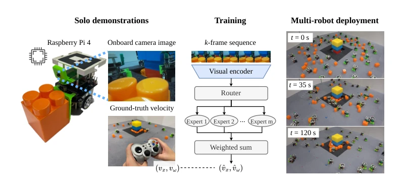
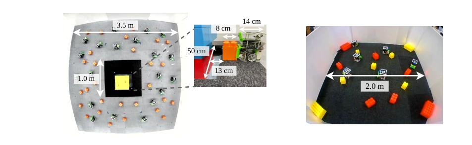
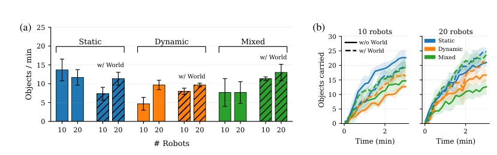
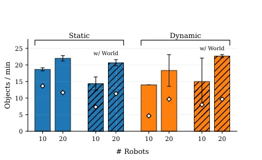
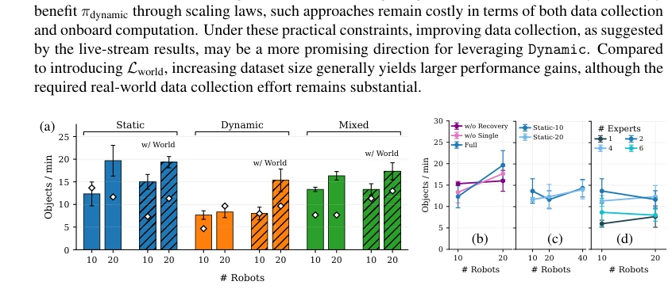
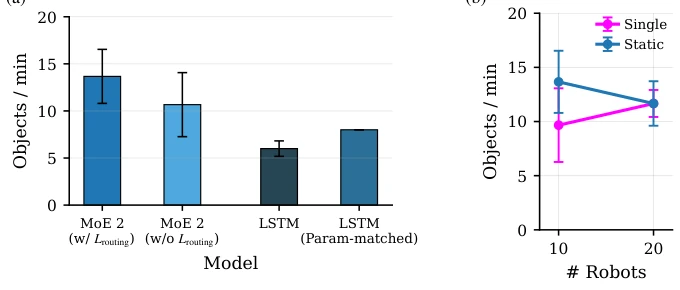

Learning Coordinated Visuomotor Box-Pushing from Solo Demonstrations
Ryusei Matsumoto, Mei Kinjo, Yoko Sasaki, Keisuke Okumura abspdf
论文点评Review
这篇论文试图用“单人示范”解决多机器人协同难题，结果发现“静态队友”比“动态队友”更好教，这反直觉的发现值得玩味。作者用树莓派跑端到端策略，省去了通信和外部定位，确实硬核。但吞吐量随机器人数量增加并未线性增长，拥堵成了硬伤。虽然提出了 MoE 和 World Model，但在大规模部署下，数据质量瓶颈比模型架构更致命。与其说是学习协同，不如说是学会了“如何不撞车”。这种“反常识”的结论揭示了多机器人研究中数据收集的深层困境，值得后续研究深思。
This paper attempts to address the multi-robot collaboration challenge using "single-person demonstrations". Results reveal that "static teammates" are easier to teach than "dynamic teammates", this counter-intuitive finding is worth pondering. The authors implement end-to-end policies on Raspberry Pi, eliminating communication and external localization, which is indeed technically impressive. However, throughput did not scale linearly with the number of robots, and congestion became a critical flaw. Although MoE and World Model are proposed, under large-scale deployment, the data quality bottleneck is more critical than the model architecture. Rather than learning collaboration, it is more akin to learning "how not to crash". This "counter-intuitive" conclusion reveals the deep dilemma of data collection in multi-robot research, warranting deep reflection in subsequent studies.
The core pain point of Multi-Robot Imitation Learning (MAIL) lies in acquiring high-quality collective demonstration data. Traditional teleoperation struggles to control a large number of robots simultaneously [6], while solutions relying on motion capture systems or communication infrastructure constrain real-world deployment [13, 14]. Existing work such as R2BC [7] attempts to learn from single-agent demonstrations, yet the scale remains limited. This paper aims to explore how to achieve large-scale collaboration using Solo Demonstrations under conditions of no communication and onboard resource constraints. This is not merely an exploration of data collection strategies, but also a re-examination of the essence of "collaboration": In scenarios with dense physical interactions, avoiding interference is more difficult than active cooperation, and existing research lacks empirical evidence for large-scale real-world deployment.
The overall workflow is: Data Construction -> Policy Training -> Deployment. Data is categorized into four types: Single (Single-person), Static (Static teammates), Dynamic (Dynamic teammates), Recovery (Recovery). The policy employs a lightweight MoE architecture, with MobileNetV2 encoding images, LSTM decoding speed commands, and a Router weighting expert outputs. Innovations include: 1) Introducing entropy regularization to prevent expert collapse; 2) Incorporating an auxiliary future prediction loss L_world to enhance prediction of the surrounding environment; 3) Emphasizing data distribution quality, finding that static demonstrations actually suppress congestion better than dynamic demonstrations. Training is conducted on an RTX 3090, deployment on a Raspberry Pi 4, fully decentralized.

Figure 1: We learn coordinated box-pushing policies from solo demonstrations (left). A lightweight mixture-of-experts architecture captures diverse skills under onboard resource constraints (middle). The resulting policy enables a multi-robot team to clean up scattered objects (right). The video is available at https://youtu.be/J9KfPI-hJX4.

Figure 7: Workspace layouts for the box collection task (left) and the colour classification task (right).
Conducted on real robots, with up to 40 units. The metric is throughput (Objects/min). Main findings: 1) The Static policy outperforms Dynamic, the latter causing congestion due to high noise; 2) Increasing data volume (20K->60K) alleviates Static's out-of-distribution issues, but offers limited improvement for Dynamic; 3) The MoE architecture is significantly superior to a single LSTM; 4) The color classification task replicated the same trend. The conclusion is that dynamic observation data collection remains a bottleneck, and linear scaling of large-scale collaboration has not been achieved. This demonstrates that merely accumulating data cannot resolve the complexity of dynamic interactions, necessitating the exploration of superior data generation mechanisms.

Figure 3: Policy performance across datasets and loss designs. (a) Task throughput, measured as the number of transported objects per unit time. (b) Task progress over time.

Figure 4: Policy performance with data col- lected via the onboard camera stream. ⋄mark- ers indicate the reference performance obtained with direct operator observation (Fig. 3).

Figure 5: (a) Effect of dataset scaling to 60K samples, evaluated in terms of task throughput. White diagonal markers indicate the reference performance obtained with 20K-sample training. (b) Dataset ablation results, (c) sensitivity to the robot population in the Static training dataset, and (d) inves- tigation of the MoE architecture using πstatic.

Figure 8: (a) Further evaluation of the MoE architecture. (b) Contribution of Static data to policy performance.